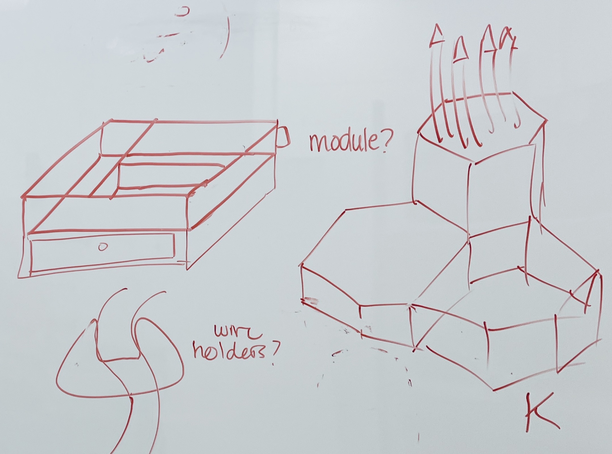
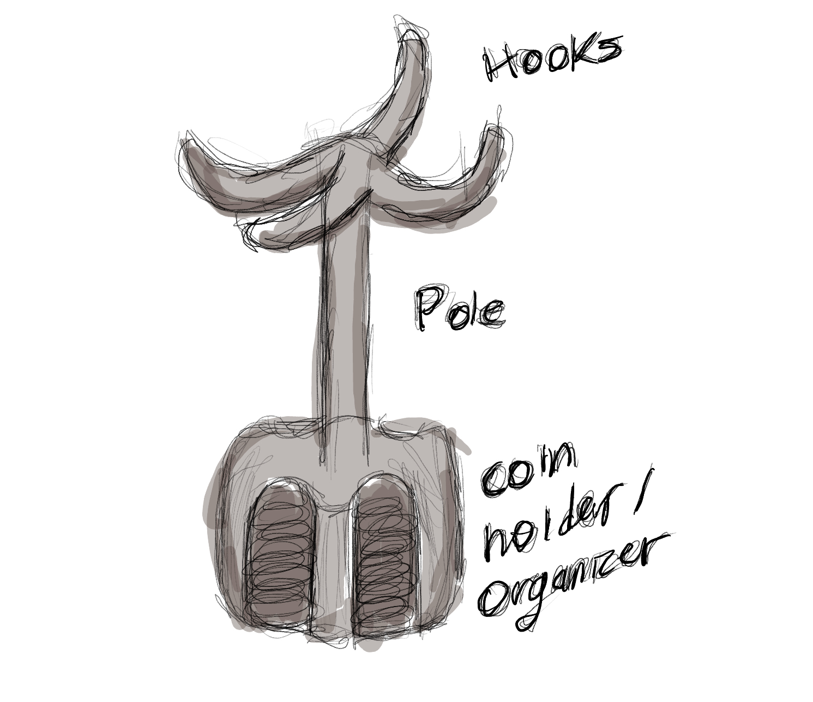
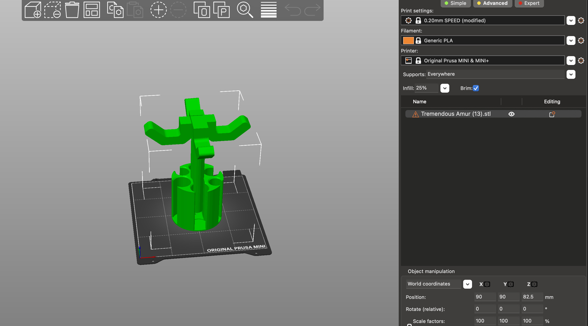
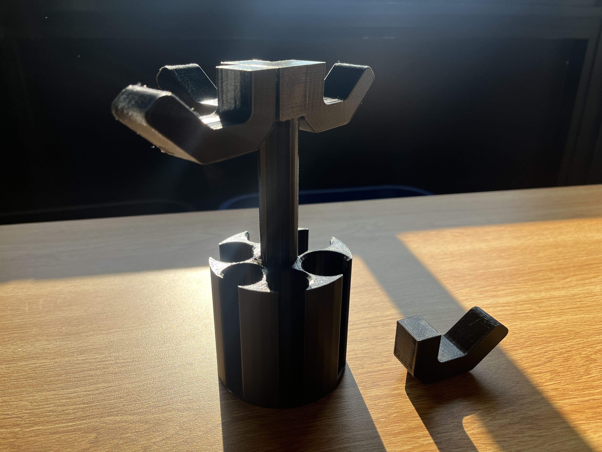
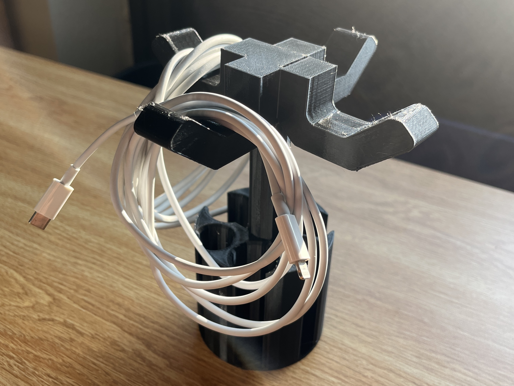

Brainstorming / Ideation
When coming up with something that I was interested in printing, my mind immediately jumped to organizational items for my room. With this broad idea in mind, I began thinking of potential items that I could 3D print and optimize to my own needs. At first, I thought of wire holders, a modular vanity tray, and a pencil holder. While I enjoy the simplicity of these items, I thought they were perfect as they are and not in need of additional attachments. I started thinking about two items for which I could never find the right place – my keys and my coins! As someone who cares deeply about organization and saving money (even if it's just to buy a small beverage!) something that addresses this problem was a no-brainer. Unfortunately, I do not have a place to put my coins where they are sorted properly for easy money counting. That's when the idea came to me. Why don't I organize both of these miscellaneous items using one apparatus?
Planning
When designing this, I needed to consider a way to hang a key from the apparatus without it getting in the way of the coin holder. The solution to this problem was simple: I would create a design that combines four hooks and a coin holder via a pole protruding from its center. Here is a sketch of my design:
TinkerCAD and PrusaSlicer
I found STL files for both a cylindrical coin holder and a hook, which I was able to open in TinkerCAD and combine by placing and extruding a cylindrical pole from the center of the coin holder. At the top of this cylindrical pole, I placed a cube so that the hooks have a place to sit. One challenge I faced, in the midst of this process, however, was that the protruding pole caused the print to extend beyond the print space. I took two approaches to fix this problem. The first approach was to shorten the length of the pole. The second approach involved trimming off the top portion of the print, which I determined would not affect the functionality of the apparatus. After making these alterations in TinkerCAD I was then able to open my stl file in Prusa Slicer. Because the hooks extend outward into open air, it was necessary to enable supports so that the printer could lay down filament in these areas. Additionally, I configured Prusa Slicer with specific settings to ensure optimal print quality. I chose a layer height of 0.2 mm, an infill percentage of 25%, and a moderate print speed to strike a balance between speed and quality. Lastly, I enabled a brim to improve bed adhesion and to prevent warping. After correcting this issue, I was then able to proceed with printing my design.
Note: if you're curious about more detailed print settings, reference those of my kirby print under project 1. They are the same apart from infill, which in this case was increased to 25%
Individual Components:
Combining Pieces in TinkerCAD + Error in PrusaSlicer:
Final stl File Before Printing:
Printing
Printing went very well! I had some trouble at the beginning, since I assumed that the loaded filament in one of the Prusa Mini's was PLA, when it was actually a different material. I noticed this during recalibration when the filament was not extruding uniformally onto the metal plate. I quickly changed the material to PLA then tried recalibrating again and this time it extruded perfectly! Total time to print took approximately 22 hours.
Results
Overall, the print came out looking very cool! In terms of structural integrity, the print was sound, although after removing the support material, I realized that one of the hooks had not been properly attached. Unfortunately, this meant that one of the hooks was not printed correctly on the side of the cube at the top of the pole. My efforts, however, were not completely in vain.
Post Processing
At the end of the day, I still had three properly attached hooks and could correct my print by sanding the attachment sites of both the hook and the cube. I then proceeded by applying superglue to the detachment site, which would ensure a tight fit and help melt the PLA, creating a stronger bond. Here are some images of the sanding process:Drying and Finished Product:
To improve my design, I think I'd have to extend the pole beyond its current length of about 7 inches. This would allow the keys to hang without interfering too much with the coin holder. To do this, it would require a 3D printer with a larger printing area than the Prusa Mini, which I believe I could reasonably gain access to after obtaining permission. Another aspect of the design that I would like to alter is the width of the hooks. As it currently stands, the hooks are slightly wide, meaning they can only support looped chains or strands with diameters larger than the width of the hooks themselves. The last thing I'd like to improve are the supports. I plan to use tree supports so that I use less filament, save time, and expedite post-processing
Concluding Thoughts
As it currently stands, I do not think what I've printed is suitable for my keys. However, I believe it solves a problem I had not considered before! It can hold looped cables that are not in immediate use. Having this problem solved, as opposed to being able to hold my keys, is better since I have more miscellaneous cables than I do keychains
In conclusion, my 3D printing project started with the aim of creating an innovative key and coin organizer. While I faced challenges during the design and printing phases, the end result showed promise, albeit with room for improvement. I've identified key enhancements, such as extending the pole's length and refining the hook design. Surprisingly, the apparatus proved effective for organizing miscellaneous cables. This project highlights the adaptability of 3D printing and has sparked new ideas for future endeavors.
